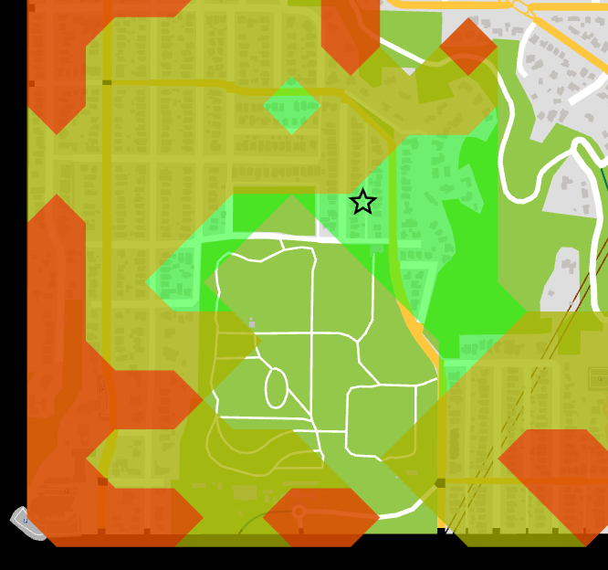

15-minute neighborhood explorer

- Web version
- To run locally, get the
latest release for Windows,
Mac, or Linux. After unzipping, run
fifteen_min.exeorfifteen_min.
In a 15-minute city, most residents can reach a variety of stores, restaurants, parks, and jobs within about a 15 minute walk or bike ride. Part of advocating for a bike-friendly city is evaluating the zoning laws and understanding where people live in relation to where they work, shop, and meet friends. This tool is a prototype letting you see what's 15 minutes away from a starting point. You can explore the shops and estimate how much street parking and how many people live within a walkshed.
Feedback
The tool is quite simple right now. If you have an idea how this could be used for advocacy, please get in touch.
Implementation
This section describes some of the technical implementation details.
Calculating time to buildings
When you click on a starting building, what happens? Follow along with the code: https://github.com/a-b-street/abstreet/blob/master/fifteen_min/src/isochrone.rs
First, we calculate the time to reach all buildings on the map from the start, based on the current options for walking or biking. For walking, this calls all_walking_costs_from. This method simply performs Dijkstra's maneuever, floodfilling a graph from the start node and tracking the cost to reach other nodes. It terminates early when the cost exceeds 15 minutes.
One relevant detail is that the graph is based off of WalkingNodes, which
represent both endpoints of a sidewalk. A building exists some distance along a
sidewalk. To calculate the final cost to a building, we also add up the cost
between the nearest end of the sidewalk and the building's exact position along
the sidewalk. This calculation doesn't use the length of the building's
driveway/front path, but it could.
The other question is how we calculate the cost to cross a sidewalk. The units
are durations, and most of the time, we simply calculate distance / speed. The
base speed for walking can be configured in the 15m tool UI, with a few pre-set
values for jogging, using a wheelchair, or a general average for adults. We also
adjust speed based on the road's incline,
using a variation of
Tobler's hiking function.
The elevation data baked into the map model likely has bugs, which then affect
walking speed.
In the future, we'll keep expanding this definition of "cost" to capture other factors that make it safe and pleasant to walk, so that the 15m tool ultimately reflects how awful it'd be to access essential services by walking along a busy arterial road.
Drawing the isochrone
Now that we have the cost to reach a bunch of buildings, we want to draw the three-colored isochrone, showing the area reachable within 5, 10, and 15 minutes. We use the contour crate to do this, which uses the marching squares algorithm to find the "contour" where the cost changes from less than 5 to over 5 minutes.
In my mind, an isochrone contour algorithm could just take the list of (point, cost) pairs as input, but marching squares requires a grid, so the code first creates that grid, using a fixed 100 meter cell size. If two buildings happen to map to the same square, the cost of one of them is used arbitrarily. It shouldn't matter much; it takes around 30 seconds to walk 100 meters, so the contour might be a little off by about that much.

You can see some gaps in the middle of the park. Because there are no buildings in the middle, the grid cell has 0 cost in there. There's probably some better approaches to calculating isochrones.
Finding the perfect home
The tool also has a feature that lets you mark what categories of amenities you care about, then it finds houses within a 15 min walk of all of those. Its implementation is laughably brute-force. For each of the categories, it finds all stores matching that category, then does the Dijkstra's floodfill from each of those buildings. An obvious speedup here would be to perform Dijkstra's just once for each category and insert all of the stores into the priority queue as starting nodes.